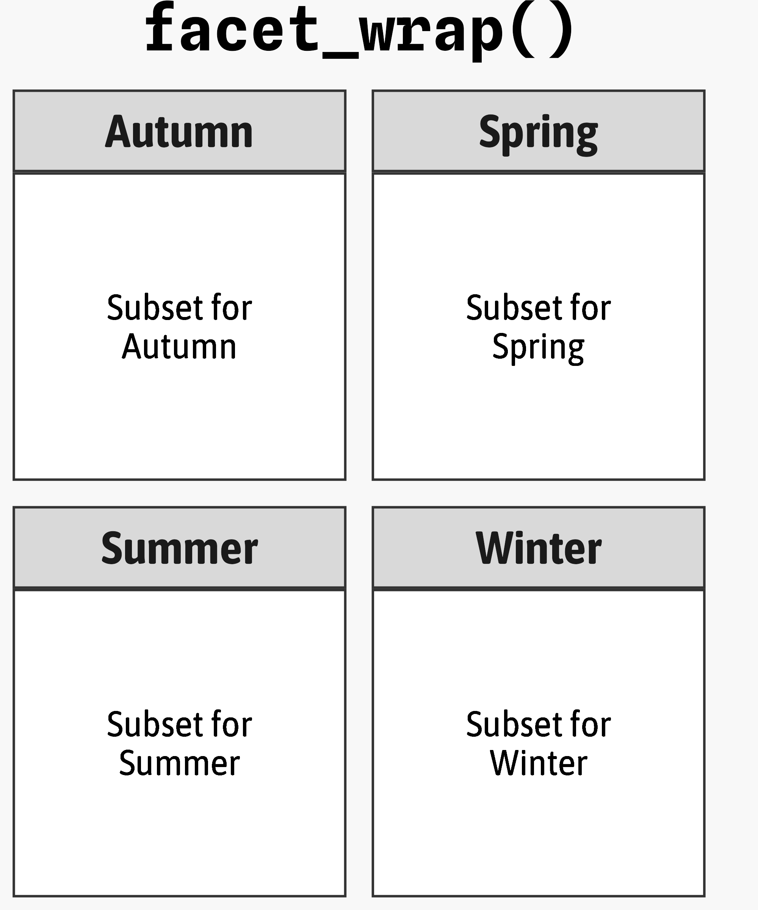
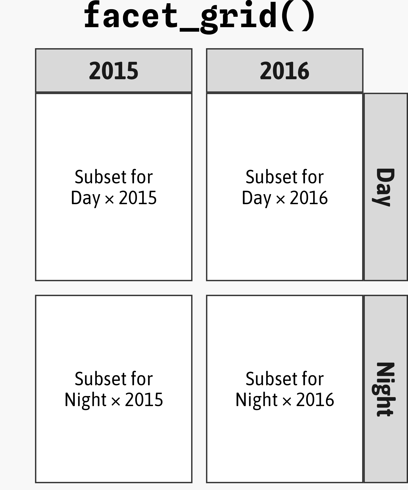
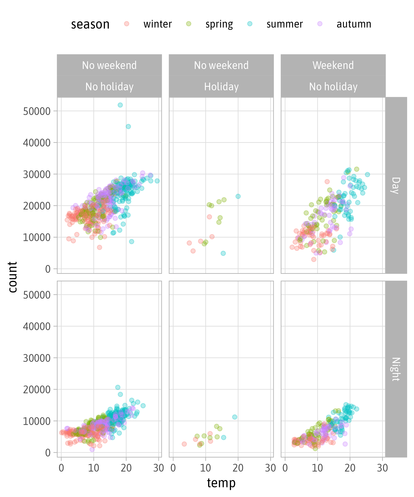
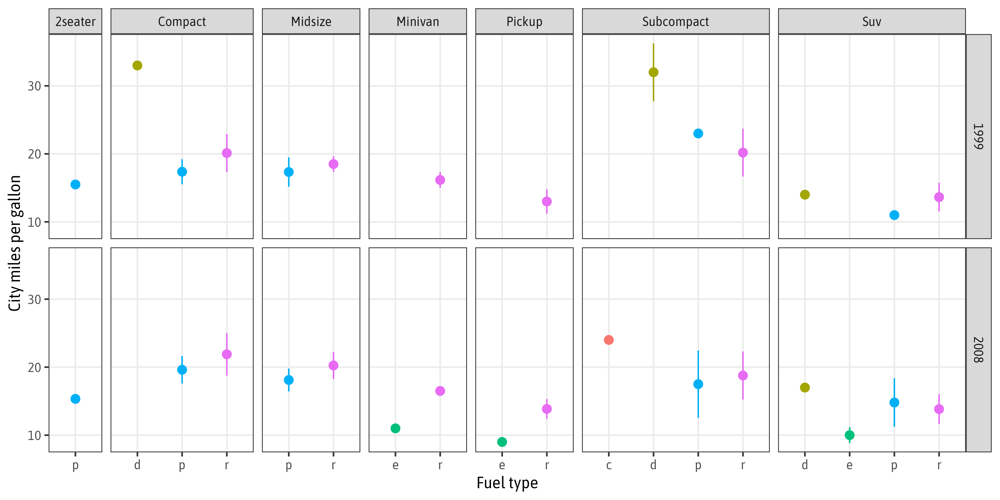
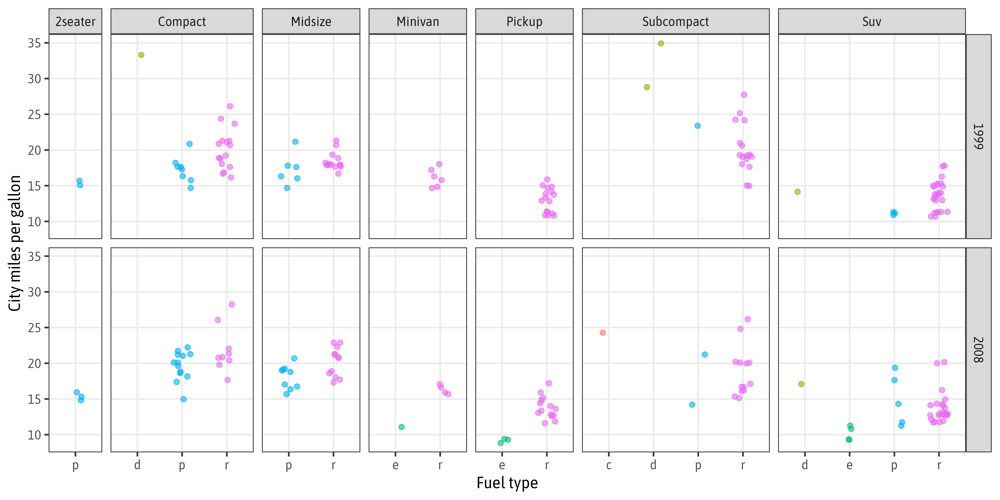
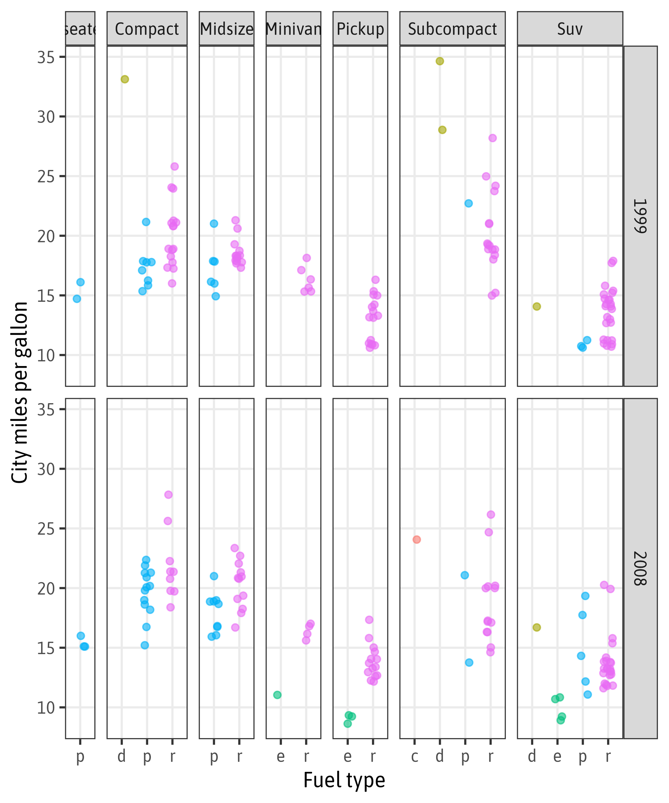

library(ggplot2)
library(dplyr)
bikes <- readr::read_csv(
here::here("data", "london-bikes-custom.csv"),
col_types = "Dcfffilllddddc"
)
theme_set(theme_light(base_size = 14, base_family = "Asap SemiCondensed"))
theme_update(
panel.grid.minor = element_blank(),
plot.title = element_text(face = "bold"),
legend.position = "top",
plot.title.position = "plot"
)Engaging & Reproducible Data Visualization
From Theory to Implementation with ggplot2
Concepts of the Layered Grammar of Graphics (Pt. 2)
Dr. Cédric Scherer // NC3 Workshop // January 2024
The Components of a ggplot
| Component | Function | Explanation |
|---|---|---|
| Data |
ggplot(data)
|
The raw data that you want to visualize (initialising a plot). |
| Aesthetics |
aes()
|
The mapping between variables and visual properties. |
| Geometries |
geom_*()
|
The geometric shape of a layer representing the data. |
| Statistics |
stat_*()
|
The statistical transformation of a layer applied to the data. |
| Scales |
scale_*()
|
The representation of mapped aesthetic attributes. |
| Coordinate System |
coord_*()
|
The transformation to map data coordinates into the plot plane. |
| Facets |
facet_*()
|
The arrangement of the data into a set of small multiples. |
| Visual Themes |
theme() | theme_*()
|
The overall visual defaults of non-data elements of the graphic. |
Preparation
Facets
Facets
= split variables to multiple panels
Facets are also known as:
- small multiples
- trellis graphs
- lattice plots
- conditioning


Setup
Wrapped Facets
Wrapped Facets
Facet Multiple Variables
Facet Labellers
Facet Labellers
Facet Labellers
Facet Labellers
Facet Options: Cols + Rows
Facet Options: Free Scaling
Facet Options: Free Scaling
Facet Options: Switch Labels

Gridded Facets
Gridded Facets
Facet Multiple Variables
Facet Labellers

Facet Options: Free Scaling
Facet Options: Switch Labels
Facet Options: Proportional Spacing
Facet Options: Proportional Spacing
Show Overall Data Across Panells
Exercise
Your Turn!
Create the following facet showing mean ± standard deviation using the mpg data.

Your Turn!
Alternative version: Show values as jitter strips.

Solution Exercise
Create Base Plot: Jitter Strips
Create Base Plot: Error Bars

Turn Into Facet
Turn Into Facet
Store the Facet
Polish the Plot
Jitter Version (Full Code)
ggplot(mpg, aes(x = fl, y = cty,
color = fl)) +
geom_jitter(
width = .2,
alpha = .6
) +
facet_grid(
year ~ class,
scales = "free_x",
space = "free_x",
labeller = labeller(
.default = stringr::str_to_title
)
) +
labs(
x = "Fuel type",
y = "City miles per gallon"
) +
theme_bw(
base_size = 12,
base_family = "Asap SemiCondensed"
) +
theme(
legend.position = "none",
panel.grid.minor = element_blank()
)
Scales
Scales
= translate between variable ranges and property ranges
- feels-like temperature ⇄ x
- reported bike shares ⇄ y
- season ⇄ color
- year ⇄ shape
- …
Scales
The scale_*() components control the properties of all the
aesthetic dimensions mapped to the data.
Consequently, there are scale_*() functions for all aesthetics such as:
positions via
scale_x_*()andscale_y_*()colors via
scale_color_*()andscale_fill_*()sizes via
scale_size_*()andscale_radius_*()shapes via
scale_shape_*()andscale_linetype_*()transparency via
scale_alpha_*()
Scales
The scale_*() components control the properties of all the
aesthetic dimensions mapped to the data.
The extensions (*) can be filled by e.g.:
continuous(),discrete(),reverse(),log10(),sqrt(),date()for positionscontinuous(),discrete(),manual(),gradient(),gradient2()for colorscontinuous(),discrete(),manual(),ordinal(),area(),date()for sizescontinuous(),discrete(),manual(),ordinal()for shapescontinuous(),discrete(),manual(),ordinal(),date()for transparency

Illustration by Allison Horst
Continuous vs. Discrete in {ggplot2}
Continuous:
quantitative or numerical data
- height
- weight
- age
- counts
Discrete:
qualitative or categorical data
- species
- sex
- study sites
- age group
Continuous vs. Discrete in {ggplot2}
Continuous:
quantitative or numerical data
- height (continuous)
- weight (continuous)
- age (continuous or discrete)
- counts (discrete)
Discrete:
qualitative or categorical data
- species (nominal)
- sex (nominal)
- study site (nominal or ordinal)
- age group (ordinal)
Aesthetics + Scales
Aesthetics + Scales
Scales
Scales
Scales
`scale_x|y_continuous`
`scale_x|y_continuous`

`scale_x|y_continuous`
`scale_x|y_continuous`
`scale_x|y_continuous`
`scale_x|y_continuous`
`scale_x|y_continuous`
`scale_x|y_continuous`
`scale_x|y_continuous`
`scale_x|y_continuous`
`scale_x|y_continuous`
`scale_x|y_continuous`
`scale_x|y_continuous`
`scale_x|y_continuous`
`scale_x|y_continuous`
`scale_x|y_continuous`
`scale_x|y_date`
`scale_x|y_date`
`scale_x|y_date` with `strftime()`
`scale_x|y_date` with `strftime()`
`scale_x|y_discrete`
`scale_x|y_discrete`
Discrete or Continuous?
Discrete or Continuous?
Discrete or Continuous?
Discrete or Continuous?
Discrete or Continuous?
`scale_color|fill_discrete`
Inspect Assigned Colors
colour x y PANEL group
1 #3ca7d9 16439 6830 1 1
2 #3ca7d9 16439 2404 1 1
3 #3ca7d9 16440 14763 1 1
4 #3ca7d9 16440 5609 1 1
5 #3ca7d9 16441 14501 1 1
200 #1ec99b 16538 8830 1 2
201 #1ec99b 16539 24019 1 2
202 #1ec99b 16539 10500 1 2
203 #1ec99b 16540 25640 1 2
204 #1ec99b 16540 11830 1 2
205 #1ec99b 16541 22216 1 2
400 #F7B01B 16638 12079 1 3
401 #F7B01B 16639 26646 1 3
402 #F7B01B 16639 12446 1 3
403 #F7B01B 16640 11312 1 3
404 #F7B01B 16640 4722 1 3
405 #F7B01B 16641 22748 1 3`scale_color|fill_discrete`
`scale_color|fill_discrete`
`scale_color|fill_discrete`
`scale_color|fill_manual`
`scale_color|fill_carto_d`
`scale_color|fill_continuous`

`scale_color|fill_continuous`
`scale_color|fill_gradient`
`scale_color|fill_gradient2`
`scale_color|fill_gradient2`
`scale_color|fill_gradientn`
`scale_color|fill_viridis_c`
`scale_color|fill_viridis_c`
`scale_color|fill_viridis_c`
`scale_color|fill_distiller`
{RColorBrewer}

{RColorBrewer}

`scale_color|fill_carto_c`
{rcartocolor}

{rcartocolor}
`scale_color|fill_scico`
`scale_color|fill_scico`
{scico}
Customize Existing Palettes
Customize Existing Palettes
Customize Existing Palettes
Customize Existing Palettes
Customize Existing Palettes

Guides
Guides
Guides
Guides
Guides
Guides
Guides
Guides
Guides
Exercise
Your Turn!
Modify our facet to look like this:
Solution Exercise
Store Plot
p <-
ggplot(mpg, aes(x = fl, y = cty, color = fl)) +
stat_summary(
fun = mean,
fun.max = function(y) mean(y) + sd(y),
fun.min = function(y) mean(y) - sd(y)
) +
facet_grid(
year ~ class,
scales = "free_x",
space = "free_x",
labeller = labeller(
.default = stringr::str_to_title
)
) +
labs(
x = "Fuel type",
y = "City miles per gallon"
) +
theme_bw(
base_size = 12,
base_family = "Asap SemiCondensed"
) +
theme(
panel.grid.minor = element_blank()
)
pAdjust y-Axis
Adjust x-Axis
Modify Colors
Style Legend Labels
Modify Legend

Coordinate Systems
Coordinate Systems
= interpret the position aesthetics
- linear coordinate systems: preserve the geometrical shapes
coord_cartesian()coord_fixed()coord_flip()
- non-linear coordinate systems: likely change the geometrical shapes
coord_polar()coord_map()andcoord_sf()coord_trans()
Cartesian Coordinate System
Cartesian Coordinate System
Changing Limits
Clipping
Clipping
… or better use {ggrepel}
Remove All Padding
Fixed Coordinate System

Flipped Coordinate System

Flipped Coordinate System
Reminder: Sort Your Bars!
Reminder: Sort Your Bars!
Circular Coordinate System
Circular Coordinate System
Circular Coordinate System
Circular Coordinate System
Transform a Coordinate System
Transform a Coordinate System
Spatial Coordinate (Reference) Systems
Spatial Coordinate (Reference) Systems
Spatial Coordinate (Reference) Systems
Generate Own Simple Features Objects
Generate Own Simple Features Objects
Spatial Coordinate (Reference) Systems
Spatial Coordinate (Reference) Systems
Spatial Coordinate (Reference) Systems
Spatial Coordinate (Reference) Systems
Mapping of Visual Properties
ggplot() +
geom_sf(
data = oceans,
fill = "#d8f1f6",
color = "white"
) +
geom_sf(
data = countries,
aes(fill = economy),
color = "white",
linewidth = .3
) +
coord_sf(
crs = "+proj=moll"
) +
scale_fill_viridis_d(
option = "magma",
guide = guide_legend(
ncol = 1, title.position = "top"
)
) +
theme_void() +
theme(legend.position = "top")Mapping of Visual Properties
ggplot() +
geom_sf(
data = oceans,
fill = "#d8f1f6",
color = "white"
) +
geom_sf(
data = countries,
aes(fill = adm0_a3 %in% c("AUS", "NZL")),
color = "white",
linewidth = .3
) +
coord_sf(
crs = "+proj=moll"
) +
scale_fill_manual(
values = c("grey70", "#208462")
) +
theme_void() +
theme(legend.position = "none")Better Borders
borders <- rmapshaper::ms_innerlines(countries)
ggplot() +
geom_sf(
data = oceans,
fill = "#d8f1f6",
color = "white"
) +
geom_sf(
data = countries,
aes(fill = adm0_a3 %in% c("AUS", "NZL")),
color = "transparent"
) +
geom_sf(
data = borders,
fill = "transparent",
color = "white",
linewidth = .3
) +
coord_sf(
crs = "+proj=moll"
) +
scale_fill_manual(
values = c("grey70", "#208462")
) +
theme_void() +
theme(legend.position = "none")Recap
facet_*()functions allow to create small multiplesscale_*()functions translate betweenaesthetics and properties- use
*_continuous()for numerical data - … and
*_discrete()for categorical data - use
scale_color|fill_*()to customize data-related colors coord_*()functions interpret the positional aesthetics- e.g. create polar plots or work with spatial projections
- be careful when adjusting axis limits:
scale_*_continuous(limits)removes the data outside the rangecoord_*(*lim)keeps the data and zooms into the range
Exercises
Exercise 1
Create the following visualization as close as possible:
Exercise 2
- Download data set(s) for your home country or study area and plot it/them.
- Change the projection with
coord_sf()and observe how the spatial mapping changes. - Choose a projection that is suited for the given area.
- Add a marker to indicate your home city, exact location of the study etc.
Solution Exercise 1
Exercise 1
Create the following visualization as close as possible:
Data
# A tibble: 9 × 2
entity emissions
<chr> <dbl>
1 Bus (average) 96.5
2 Diesel car 171.
3 Domestic flight 246.
4 Electric car 47.1
5 Eurostar (to Paris) 4.46
6 Motorbike 114.
7 National rail 35.5
8 Petrol car 170.
9 Short-haul flight 151. Colored Bar Plot
Add Emission Labels
Add Emission Labels
Add Reference Lines
g2 <- g1 +
geom_vline(
xintercept = 1:7*35.5,
color = "white",
linewidth = .6
) +
geom_text(
aes(label = dplyr::if_else(
emissions < 10,
paste0(" ", round(emissions), " g of carbon dioxide equivalents per person and kilometer"),
paste0(" ", round(emissions), "g")
)),
hjust = 0,
family = "Asap SemiCondensed",
size = 3.8
)
g2Adjust Axes
Customize Colors
Adjust and Add Titles
g5 <- g4 +
labs(
title = "Taking the train instead of a petrol car or plane for medium-range travels cuts your emissions by more than 80%.",
subtitle = "If you took the Eurostar in France instead of a short-haul flight, you’d be able to cut your journey’s carbon footprint by around 97%.",
caption = "Data: UK Government, Department for Energy Security and Net Zero via OurWorldInData\nNote: Official conversion factors used in UK reporting. Data for aviation is based on economy class.",
x = "Travel emissions compared to taking the nation rail"
)
g5Theming
Theming
g6 +
theme(
panel.grid = element_blank(),
axis.title.x = element_text(
hjust = 0, color = "grey30", size = rel(.85)
),
axis.text.x = element_text(
hjust = c(rep(.5, 6), .12)
),
axis.text.y = element_text(
color = "black", size = rel(1.2), hjust = 0
),
axis.ticks.x = element_line(
color = "grey85", linewidth = .6
),
axis.ticks.length = unit(.4, "lines"),
plot.title = element_text(face = "bold"),
plot.subtitle = element_text(
margin = margin(t = -5, b = 25)
),
plot.caption = element_text(
hjust = 0, margin = margin(t = 20), size = rel(.7)
),
plot.title.position = "plot",
plot.caption.position = "plot",
plot.margin = margin(rep(15, 4))
)Full Code
travel <- readr::read_csv("data/carbon-footprint-travel-2022-simple.csv")
ggplot(travel, aes(x = emissions, y = forcats::fct_reorder(entity, -emissions))) +
geom_col(aes(fill = emissions < 40), width = .65) +
geom_vline(xintercept = 1:7*35.5, color = "white", linewidth = .6) +
geom_text(aes(label = dplyr::if_else(emissions < 10,
paste0(" ", round(emissions),
" g of carbon dioxide equivalents per person and kilometer"),
paste0(" ", round(emissions), "g"))),
hjust = 0, family = "Asap SemiCondensed", size = 3.8) +
scale_x_continuous(expand = expansion(add = c(0, 15)),
breaks = 1:7*35.5, labels = c(paste0(1:6, "x"), "7x higher")) +
scale_y_discrete(name = NULL, expand = c(0, 0)) +
scale_fill_manual(values = c("grey65", "#208865"), guide = "none") +
coord_cartesian(clip = "off") +
labs(title = "Taking the train instead of a petrol car or plane for medium-range travels cuts your emissions by more than 80%.",
subtitle = "If you took the Eurostar in France instead of a short-haul flight, you’d be able to cut your journey’s carbon footprint by around 97%.",
caption = "Data: UK Government, Department for Energy Security and Net Zero via OurWorldInData\nNote: Official conversion factors used in UK reporting. Data for aviation is based on economy class.",
x = "Travel emissions compared to taking the nation rail") +
theme_minimal(base_size = 14, base_family = "Asap SemiCondensed") +
theme(panel.grid = element_blank(),
axis.title.x = element_text(hjust = 0, color = "grey30", size = rel(.85)),
axis.text.x = element_text(hjust = c(rep(.5, 6), .12)),
axis.text.y = element_text(color = "black", size = rel(1.2), hjust = 0),
axis.ticks.x = element_line(color = "grey85", linewidth = .6),
axis.ticks.length = unit(.4, "lines"),
plot.title = element_text(face = "bold"),
plot.subtitle = element_text(margin = margin(t = -5, b = 25)),
plot.title.position = "plot",
plot.caption.position = "plot",
plot.caption = element_text(hjust = 0, margin = margin(t = 20), size = rel(.7)),
plot.margin = margin(rep(15, 4)))Export Graphic
Solution Exercise 2
Exercise 2
- Download data set(s) for your home country or study area and plot it/them.
- Change the projection with
coord_sf()and observe how the spatial mapping changes. - Choose a projection that is suited for the given area.
- Add a marker to indicate your home city, exact location of the study etc.
Setup
library(ggplot2)
library(sf)
theme_set(theme_minimal(base_size = 14, base_family = "Asap SemiCondensed"))
theme_update(panel.grid.minor = element_blank())
sf_germany <- rnaturalearth::ne_countries(country = "Germany", returnclass = "sf")
sf_germany_hd <- rnaturalearth::ne_countries(country = "Germany", scale = 10, returnclass = "sf")
class(sf_germany)[1] "sf" "data.frame"Plot the Data
Change Projection
Change Projection
Change Projection
Change Projection
Generate Locator Object
Add Location Marker
Thank You!

Cédric Scherer // Data Visualization & Information Design